Drag in a oval, then rotate it 90° towards the ground so it is flat to the ground, then click the arrows and set the dimensions to what is shown in the image below.
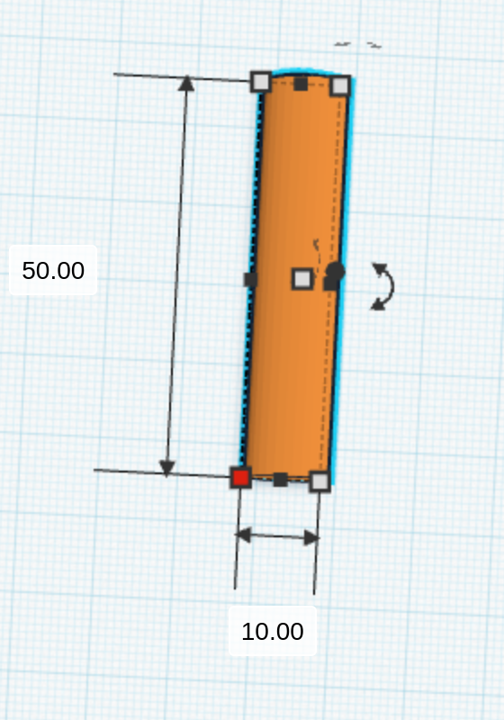 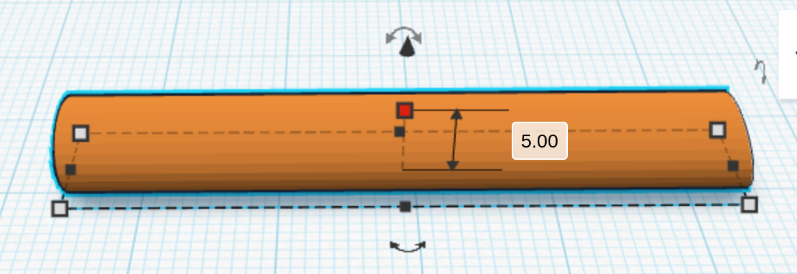Click on the small down arrow on the "Cylinder" window, and then change the sides to 50 to make it as smooth as possible.
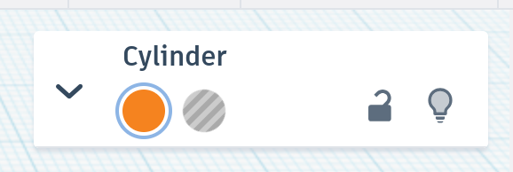 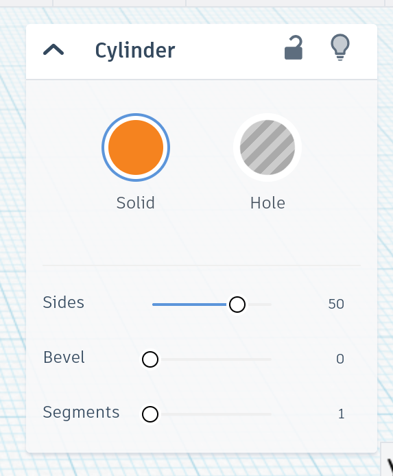Click where it says basic shapes then switch it to design starters, then click the "A" to switch to letters and numbers.
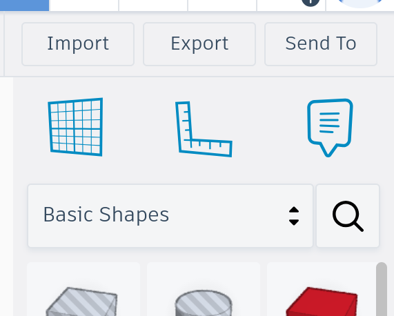 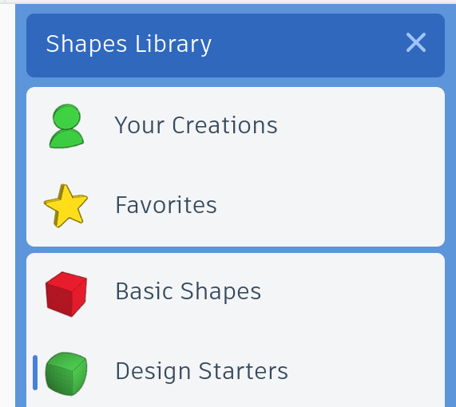 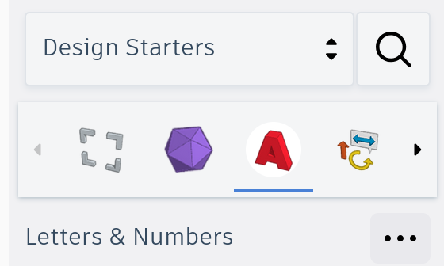Click "More Shapes" until you see the letter J, then drag it onto the board.
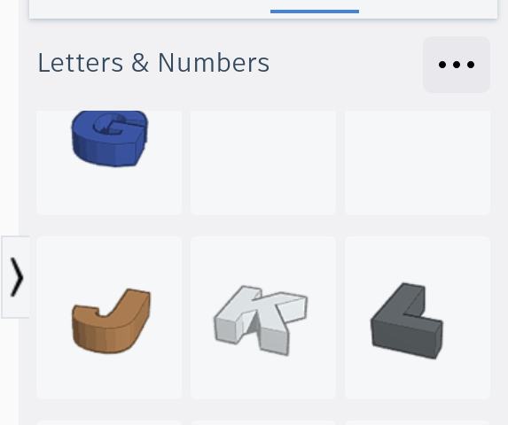 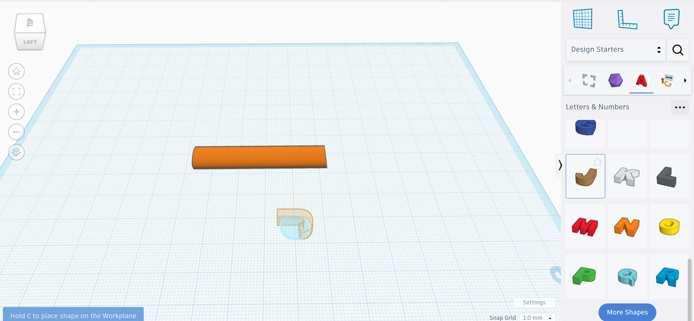Rotate the J 180 degrees horizontally, and scale it to match the dimensions in the image.
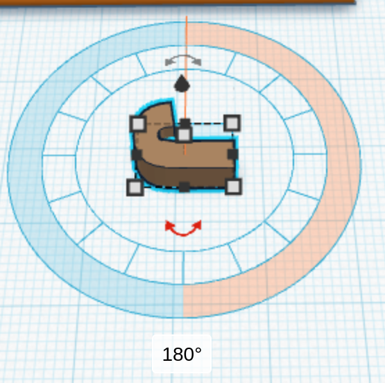 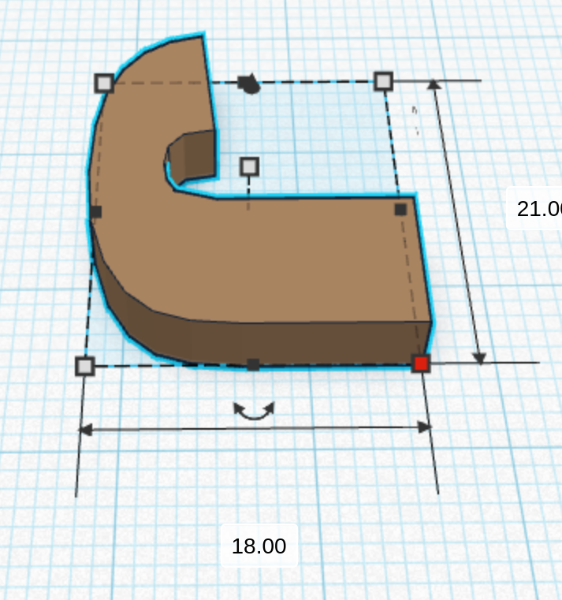Drag the J over to the cylinder you created earlier to match the image.
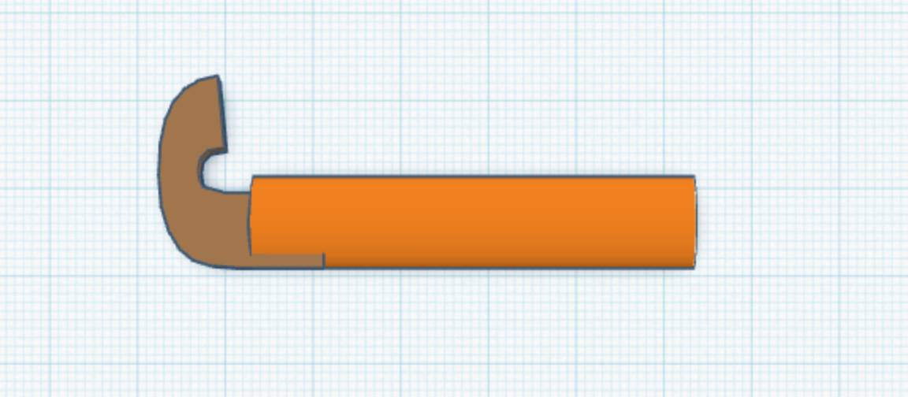